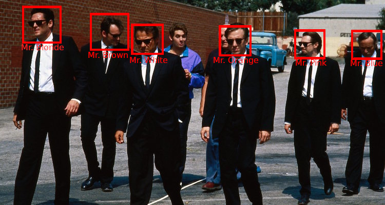

A few friends and family have recently asked me to share the photos of an event. There are a couple thousands of photos, with dozens of different people, so I wanted to share only the most relevant to them. Rather than spending an hour or so doing this, I wanted to use face recognition to help with this task.
Google Photos does this quite well, but the photo quality after upload is reduced and I’ve already hit my storage limit anyway. There are a few programs that do this as well. Of the free ones, I wanted something that worked in Linux. Shotwell is reported to have this ability, but I couldn’t get it to work. DigiKam also has it, but I found it to be very lacking - especially the recognition feature. So, I decided to learn a bit more about face recognition and see if I could come up with something quickly and easily.
I looked for simple frameworks to help me accomplish this. I found DeepFace (Serengil and Ozpinar 2020; “DeepFace GitHub Repository” n.d.), but after an hour or so, I couldn’t get it to work as I wanted. The high-level API didn’t lend well to the workflow I wanted. And when trying to use the low-level API, I hit some Tensorflow-related problems related to the lack of GPU on my system. I then found FaceNet (Timesler; Schroff, Kalenichenko, and Philbin 2015). It provides tools for face detection and generating embeddings that can be used with standard ML techniques for recognition. It works well and has a PyPI package ready to go.
In general, Face Recognition is a multi-part process (Serengil 2020)
- Detection (detect faces in photos)
- Alignment (align the faces, I actually skipped this step)
- Representation (projecting the original face into a feature space that can be used for similarity matching)
- Verification (2 faces match or not, according to some metric)
For detection, I used MTCNN (Multi-Task Cascaded Convolutional Neural Networks) (Zhang et al. 2016), already included in the FaceNet package. From here, I got the faces, which were stored in a separate folder and a simple database matching the source image for each face.
For representation, I used the InceptionResnetV1 (Szegedy et al. 2017) model with weights pre-trained on vggface2 (Cao et al. 2018). I got 512-length embeddings from this model.
Finally, for verification, I used a simple clustering algorithm. Because the same person might generate different clusters, I wanted to use a constrained clustering algorithm, so that I might add the constraints later on, with minimal impact on the pipeline. I chose Agglomerative Clustering (“scikit-learn Documentation: Agglomerative Clustering” n.d.), which is also what is used to showcase face clustering in the FaceNet original paper (Schroff, Kalenichenko, and Philbin 2015).
From my quick experiments, using only single linkage and varying the number of clusters, the algorithm works quite well, which highlights the quality of the embeddings. The best result was using 300 clusters, discarding clusters with less than 5 faces. I got everyone. Some people were split into 2-3 clusters. Usually, this happened when there was a group of photos with different lighting conditions. When I used too few clusters, some people were clumped together in the same cluster. There was one cluster that had nearly all the women from the event.
I first found it odd that good results started emerging with a very high number of clusters. There were not 300 people in the subset of images I first processed. However, there were a few non-faces and partial faces detected. These outliers will have a higher distance to real faces, but also to other outliers, meaning they will be kept on singleton clusters. I didn’t count how many of these outliers were present in my dataset, so I can’t yet be sure this is the main reason.
The next step will be to play around with the clustering algorithm and use the current clustering to constrain the algorithm. I’ll share the codebase soon.